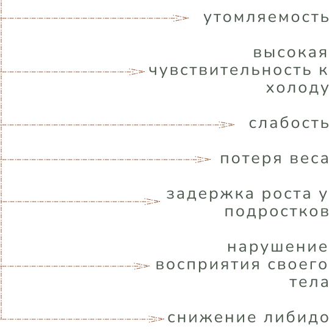
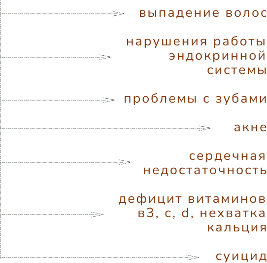

приветствие
добро пожаловать на сайт о расстройстве пищевого поведения. здесь вы можете найти основную информацию об рпп: определение, его признаки, симптомы и последствия. мы не специалисты, а потому не можем оказать поддержку самостоятельно, однако, на сайте есть список платформ, куда вы можете обратиться за квалифицированной помощью. важно упомянуть, что это зона комфорта для каждого, кто столкнулся с этим расстройством. никто не будет вас осуждать - здесь вас ожидают лишь позитивные вибрации.
расстройство пищевого поведения
для начала, разберемся, что подразумевает под собой рпп:
расстройство пищевого поведения (рпп) –
это психическое заболевание, характеризующееся нарушениями в потреблении и отношении к пище.
это заболевание имеет множество подтипов:
нервная анорексия –
болезненное желание снизить свой вес, страх ожирения
нервная булимия –
периодическое переедание и дальнейшее «очищение» организма
избегание / ограничение приема пищи (иопп) –
расстройство, связанное с потерей интереса или страхом еды
компульсивное переедание –
чрезмерное потребление пищи, основанное на психологическом факторе
пикацизм –
потребление в пищу несъедобных предметов
мышечная дисморфия –
наращивание мышц любыми способами
у каждого подтипа рпп свои признаки, но есть универсальные:
последствия рпп также индивидуальны, но чаще всего встречаются:
вопреки стереотипам, рпп не включает в себя ожирение - это отдельное заболевание. по мнению учёных, большое влияние на количество столкнувшихся с этим расстройством людей возымело стандартизация и обществом худобы. кроме того, согласно исследованиям, рпп часто встречается в совокупности с депрессивным и / или тревожным расстройствами.
платформы
–
–
информационно-коммуникативная платформа, где можно найти статистику рпп, послушать подкасты, посмотреть видео, прочитать статьи и литературу, а также узнать об опыте людей, столкнувшихся с рпп
развитие психологической помощи –
сайт с бесплатной круглосуточной горячей линией для тех, кто отчаянно нуждается в поддержке. Операторами являются психологи со стажем более 10 лет
psychat –
платформа, где можно найти подходящего психолога по расстройству пищевого поведения, с которым можно встретиться лично или поговорить в онлайн-формате. Заявки принимаются круглосуточно
сайт, где можно получить консультацию психолога в формате онлайн или ответ на вопрос в чате со специалистом. Также есть информация о причинах и симптомах рпп
фонд, оказывающий первую психологическую поддержку людям, столкнувшимся с нервной анорексией и булимией и помогающий собрать средства на оплату комплексного лечения
анонимные с расстройством пищевого поведения –
сообщество людей с рпп, готовых помочь людям с подобным опытом. здесь нет специалистов - лишь те, кто столкнулся с тем же расстройством
о сайте
многие люди столкнулись с расстройством пищевого поведения, но при попытке рассказать о проблеме близким и получить от них помощь, их встречало обесценивание. этот сайт создан для огласки и борьбы с данной проблемой, ведь получить поддержку должен каждый желающий.
сайт является практической частью проекта «расстройство пищевого поведения: психоанализ». информацию о теоретической части проекта и проделанной работе можно найти по ссылке
заключение
мы подошли к концу сайта. спасибо, что посетили его, надеюсь, вы узнали что-то новое. для людей с расстройством пищевого поведения: надеюсь, наш сайт действительно был комфортным для вас и вы смогли обратиться за помощью. никогда не опускайте руки и продолжайте бороться. вы справитесь, я верю в вас. помните, что каждый из нас по-своему прекрасен и заслуживает быть любимым не только другими, но и самим собой.
контакты
сайт был создан вирджинией и фиби - ученицами 10 класса. автором логотипа сайта является рамеоки - ученик 9 класса. процесс создания, первые варианты реализации сайта и черновики вы можете увидеть здесь. кроме того, приглашаем вас посетить наши профили в различных социальных сетях:
в них вы сможете увидеть наше творчество и повседневную жизнь, узнать об интересах и увлечениях и пообщаться с нами, задав все интересующие вопросы